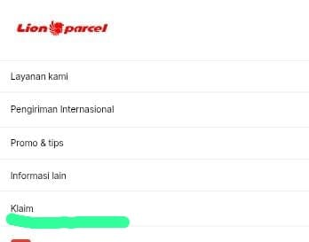

Viral Paket Hilang di Ekspedisi Oktober 2026: Cara Klaim & Tips Aman Kirim dari Rancaekek

Minggu ini media sosial rame keluhan paket hilang di ekspedisi. Ada yang iPad Rp7 juta hilang di Blitz, ada crossover audio Rp1,1 juta hilang tapi diganti cuma Rp135 ribu karena tidak asuransi. Bahkan paket pelajar Papua hilang di Makassar. Ini bikin banyak seller online di Bandung jadi was-was kirim paket.
Sebagai agen Lion Parcel Bandung POS101 Nanjungmekar Rancaekek, kami rangkum cara klaim yang benar biar hak kamu tidak hangus.
kesulitan cara pengajuan klaim paket yg hilang di lionparcel
Chat admin POS101, kami bantu caranya.
💬 Chat WhatsApp 0851-8309-04861. Kenapa Paket Bisa Hilang? Data Tren 2026
Volume paket nasional naik gila-gilaan
- Salah tempel resi / resi terlepas: Paling sering di paket marketplace
- Alamat tidak lengkap: Kurir gagal 2x antar, paket balik ke DC dan hilang di gudang
- Tidak pakai asuransi: Kalau hilang, ganti rugi cuma 10x ongkir sesuai SOP kebanyakan ekspedisi
2. Cara Klaim Paket Hilang yang Benar (Biar Diganti Full)
Jangan cuma komplain di WA kurir. Ikuti jalur resmi sesuai UU No. 8 Tahun 1999 tentang Perlindungan Konsumen:
- Simpan bukti lengkap: Foto resi, screenshot tracking terakhir, foto packing sebelum kirim, dan invoice barang.
- Lapor resmi ke CS dengan format: Nomor Resi, Nama Pengirim/Penerima, Alamat Lengkap, Kronologi. Minta nomor tiket pengaduan.
- Tunggu 2x24 jam: Kalau tidak ada solusi, kamu berhak lapor ke YLKI (pelayanan.ylki.or.id / WA 0811-1366-628) atau Ditjen PKTN Kemendag (pengaduan.kemendag.go.id).
- Pakai asuransi untuk barang di atas Rp500 ribu: Dengan asuransi, ganti rugi sesuai nilai barang, bukan cuma 10x ongkir.
📍 Lokasi Lion Parcel Bandung POS101 Nanjungmekar
Jl. Raya Barat Cicalengka RT 1 RW 1, Nanjung Mekar, Rancaekek, Kabupaten Bandung, Jawa Barat.
3. Tips Aman Kirim Paket Biar Tidak Hilang di Lion Parcel POS101
Di Lion Parcel POS101 Rancaekek kami terapkan SOP anti-hilang:
- Double resi: Resi tempel + resi tulis tangan di lakban untuk antisipasi resi lepas
- Foto + video packing: Kami fotoin paket kamu sebelum berangkat sebagai bukti klaim
- Cek alamat lengkap + patokan: Kami bantu cek alamat tujuan Bandung-Jakarta cuma 1 hari, cargo Bandung-Jakarta mulai Rp3.000/kg min 20kg
- Rekomendasi asuransi otomatis: Untuk HP, elektronik, dokumen penting wajib asuransi
Kesimpulan
Kasus paket hilang lagi tinggi di Oktober 2026 karena volume pengiriman naik 30%. Jangan panik, hak kamu dilindungi UU Perlindungan Konsumen. Kuncinya: simpan bukti, lapor resmi pakai nomor resi, dan selalu pakai asuransi untuk barang berharga. Kalau mau lebih tenang, kirim lewat agen resmi yang bisa bantu klaim seperti Lion Parcel POS101 Rancaekek.
Nama Agen: Lion Parcel Bandung POS101 Nanjungmekar Rancaekek
Jam Operasional: Senin–Minggu, 08.00–20.00 WIB
Alamat: Jl. Raya Barat Cicalengka RT 1 RW 1, Nanjung Mekar, Rancaekek, Kabupaten Bandung
WhatsApp: 0851-8309-0486